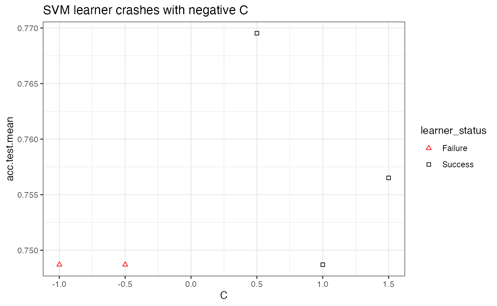
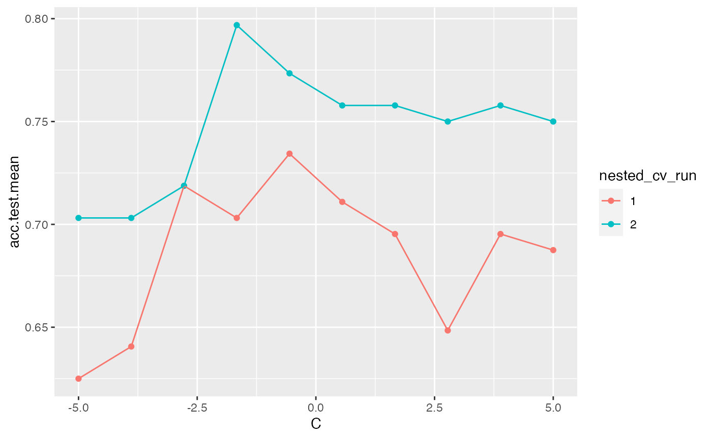
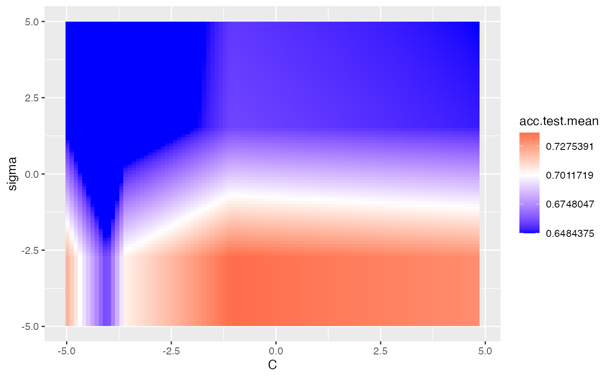
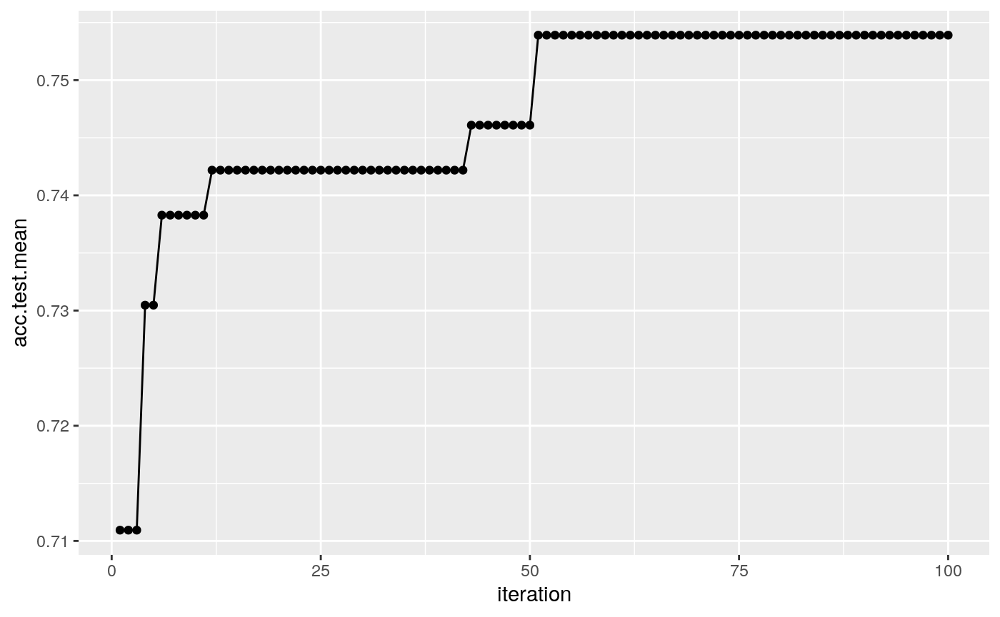
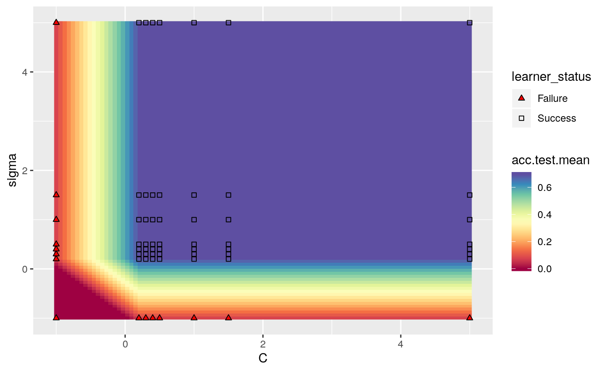
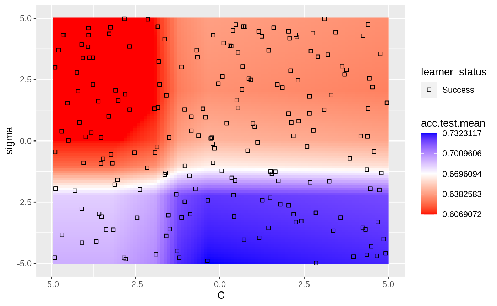
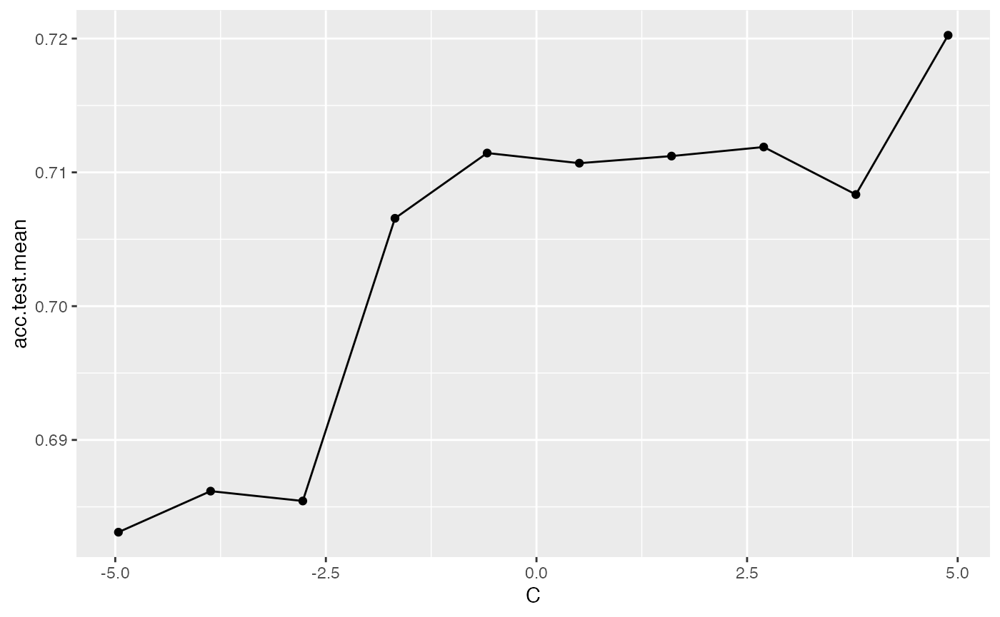
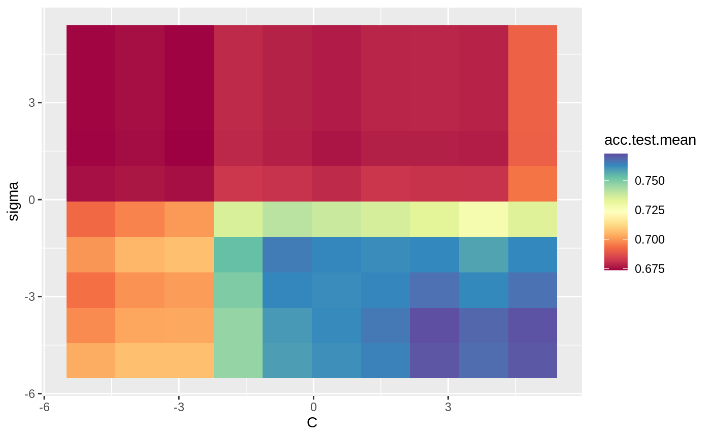

Evaluating Hyperparameter Tuning
Source:vignettes/tutorial/hyperpar_tuning_effects.Rmd
hyperpar_tuning_effects.RmdAs mentioned on the tuning tutorial page, tuning a machine learning algorithm typically involves:
- the hyperparameter search space:
# ex: create a search space for the C hyperparameter from 0.01 to 0.1 ps = makeParamSet( makeNumericParam("C", lower = 0.01, upper = 0.1) )
- the optimization algorithm (aka tuning method):
# ex: random search with 100 iterations ctrl = makeTuneControlRandom(maxit = 100L)
- an evaluation method, i.e., a resampling strategy and a performance measure:
# ex: 2-fold CV rdesc = makeResampleDesc("CV", iters = 2L)
After tuning, you may want to evaluate the tuning process in order to answer questions such as:
- How does varying the value of a hyperparameter change the performance of the machine learning algorithm?
- What’s the relative importance of each hyperparameter?
- How did the optimization algorithm (prematurely) converge?
mlr provides methods to generate and plot the data in order to evaluate the effect of hyperparameter tuning.
Generating hyperparameter tuning data
mlr separates the generation of the data from the plotting of the data in case the user wishes to use the data in a custom way downstream.
The generateHyperParsEffectData() method takes the tuning result along with 2 additional arguments: trafo and include.diagnostics. The trafo argument will convert the hyperparameter data to be on the transformed scale in case a transformation was used when creating the parameter (as in the case below). The include.diagnostics argument will tell mlr whether to include the eol and any error messages from the learner.
Below we perform random search on the C parameter for SVM on the famous Pima Indians (mlbench::PimaIndiansDiabetes()) dataset. We generate the hyperparameter effect data so that the C parameter is on the transformed scale and we do not include diagnostic data:
ps = makeParamSet( makeNumericParam("C", lower = -5, upper = 5, trafo = function(x) 2^x) ) ctrl = makeTuneControlRandom(maxit = 100L) rdesc = makeResampleDesc("CV", iters = 2L) res = tuneParams("classif.ksvm", task = pid.task, control = ctrl, measures = list(acc, mmce), resampling = rdesc, par.set = ps, show.info = FALSE) generateHyperParsEffectData(res, trafo = T, include.diagnostics = FALSE) ## HyperParsEffectData: ## Hyperparameters: C ## Measures: acc.test.mean,mmce.test.mean ## Optimizer: TuneControlRandom ## Nested CV Used: FALSE ## Snapshot of data: ## C acc.test.mean mmce.test.mean iteration exec.time ## 1 0.18477464 0.7317708 0.2682292 1 0.833 ## 2 0.19252244 0.7304688 0.2695312 2 0.041 ## 3 4.75219120 0.7200521 0.2799479 3 0.040 ## 4 0.05567812 0.6536458 0.3463542 4 0.579 ## 5 0.12179856 0.7161458 0.2838542 5 0.064 ## 6 6.25359181 0.7239583 0.2760417 6 0.056
As a reminder from the resampling tutorial, if we wanted to generate data on the training set as well as the validation set, we only need to make a few minor changes:
ps = makeParamSet( makeNumericParam("C", lower = -5, upper = 5, trafo = function(x) 2^x) ) ctrl = makeTuneControlRandom(maxit = 100L) rdesc = makeResampleDesc("CV", iters = 2L, predict = "both") res = tuneParams("classif.ksvm", task = pid.task, control = ctrl, measures = list(acc, setAggregation(acc, train.mean), mmce, setAggregation(mmce, train.mean)), resampling = rdesc, par.set = ps, show.info = FALSE) generateHyperParsEffectData(res, trafo = T, include.diagnostics = FALSE) ## HyperParsEffectData: ## Hyperparameters: C ## Measures: acc.test.mean,acc.train.mean,mmce.test.mean,mmce.train.mean ## Optimizer: TuneControlRandom ## Nested CV Used: FALSE ## Snapshot of data: ## C acc.test.mean acc.train.mean mmce.test.mean mmce.train.mean ## 1 0.07253028 0.6575521 0.6588542 0.3424479 0.3411458 ## 2 4.09306975 0.7617188 0.8906250 0.2382812 0.1093750 ## 3 2.23762232 0.7552083 0.8710938 0.2447917 0.1289062 ## 4 0.11080224 0.6940104 0.7187500 0.3059896 0.2812500 ## 5 3.37586150 0.7565104 0.8867188 0.2434896 0.1132812 ## 6 1.77872565 0.7669271 0.8567708 0.2330729 0.1432292 ## iteration exec.time ## 1 1 0.095 ## 2 2 0.079 ## 3 3 0.102 ## 4 4 0.092 ## 5 5 0.071 ## 6 6 0.088
In the example below, we perform grid search on the C parameter for SVM on the Pima Indians dataset using nested cross validation. We generate the hyperparameter effect data so that the C parameter is on the untransformed scale and we do not include diagnostic data. As you can see below, nested cross validation is supported without any extra work by the user, allowing the user to obtain an unbiased estimator for the performance.
ps = makeParamSet( makeNumericParam("C", lower = -5, upper = 5, trafo = function(x) 2^x) ) ctrl = makeTuneControlGrid() rdesc = makeResampleDesc("CV", iters = 2L) lrn = makeTuneWrapper("classif.ksvm", control = ctrl, measures = list(acc, mmce), resampling = rdesc, par.set = ps, show.info = FALSE) res = resample(lrn, task = pid.task, resampling = cv2, extract = getTuneResult, show.info = FALSE) generateHyperParsEffectData(res) ## HyperParsEffectData: ## Hyperparameters: C ## Measures: acc.test.mean,mmce.test.mean ## Optimizer: TuneControlGrid ## Nested CV Used: TRUE ## Snapshot of data: ## C acc.test.mean mmce.test.mean iteration exec.time ## 1 -5.0000000 0.6536458 0.3463542 1 0.064 ## 2 -3.8888889 0.6536458 0.3463542 2 0.037 ## 3 -2.7777778 0.6718750 0.3281250 3 0.036 ## 4 -1.6666667 0.7291667 0.2708333 4 0.038 ## 5 -0.5555556 0.7369792 0.2630208 5 0.037 ## 6 0.5555556 0.7369792 0.2630208 6 0.051 ## nested_cv_run ## 1 1 ## 2 1 ## 3 1 ## 4 1 ## 5 1 ## 6 1
ps = makeParamSet( makeNumericParam("C", lower = -5, upper = 5, trafo = function(x) 2^x) ) ctrl = makeTuneControlGrid() rdesc = makeResampleDesc("CV", iters = 2L) lrn = makeTuneWrapper("classif.ksvm", control = ctrl, measures = list(acc, mmce), resampling = rdesc, par.set = ps, show.info = FALSE) res = resample(lrn, task = pid.task, resampling = cv2, extract = getTuneResult, show.info = FALSE) generateHyperParsEffectData(res) ## HyperParsEffectData: ## Hyperparameters: C ## Measures: acc.test.mean,mmce.test.mean ## Optimizer: TuneControlGrid ## Nested CV Used: TRUE ## Snapshot of data: ## C acc.test.mean mmce.test.mean iteration exec.time ## 1 -5.0000000 0.6718750 0.3281250 1 0.066 ## 2 -3.8888889 0.6718750 0.3281250 2 0.077 ## 3 -2.7777778 0.6744792 0.3255208 3 0.070 ## 4 -1.6666667 0.7187500 0.2812500 4 0.049 ## 5 -0.5555556 0.7526042 0.2473958 5 0.049 ## 6 0.5555556 0.7630208 0.2369792 6 0.054 ## nested_cv_run ## 1 1 ## 2 1 ## 3 1 ## 4 1 ## 5 1 ## 6 1
After generating the hyperparameter effect data, the next step is to visualize it. mlr has several methods built-in to visualize the data, meant to support the needs of the researcher and the engineer in industry. The next few sections will walk through the visualization support for several use-cases.
Visualizing the effect of a single hyperparameter
In a situation when the user is tuning a single hyperparameter for a learner, the user may wish to plot the performance of the learner against the values of the hyperparameter.
In the example below, we tune the number of clusters against the silhouette score on the mtcars dataset. We specify the x-axis with the x argument and the y-axis with the y argument. If the plot.type argument is not specified, mlr will attempt to plot a scatterplot by default. Since plotHyperParsEffect() returns a ggplot2::ggplot() object, we can easily customize it to our liking!
library("clusterSim") ps = makeParamSet( makeDiscreteParam("centers", values = 3:10) ) ctrl = makeTuneControlGrid() rdesc = makeResampleDesc("Holdout") res = tuneParams("cluster.kmeans", task = mtcars.task, control = ctrl, measures = silhouette, resampling = rdesc, par.set = ps, show.info = FALSE) data = generateHyperParsEffectData(res) plt = plotHyperParsEffect(data, x = "centers", y = "silhouette.test.mean") # add our own touches to the plot plt + geom_point(colour = "red") + ggtitle("Evaluating Number of Cluster Centers on mtcars") + scale_x_continuous(breaks = 3:10) + theme_bw()
In the example below, we tune SVM with the C hyperparameter on the Pima dataset. We will use simulated annealing optimizer, so we are interested in seeing if the optimization algorithm actually improves with iterations. By default, mlr only plots improvements to the global optimum.
ps = makeParamSet( makeNumericParam("C", lower = -5, upper = 5, trafo = function(x) 2^x) ) ctrl = makeTuneControlGenSA(budget = 100L) rdesc = makeResampleDesc("Holdout") res = tuneParams("classif.ksvm", task = pid.task, control = ctrl, resampling = rdesc, par.set = ps, show.info = FALSE) data = generateHyperParsEffectData(res) plt = plotHyperParsEffect(data, x = "iteration", y = "mmce.test.mean", plot.type = "line") plt + ggtitle("Analyzing convergence of simulated annealing") + theme_minimal()

In the case of a learner crash, mlr will impute the crash with the worst value graphically and indicate the point. In the example below, we give the C parameter negative values, which will result in a learner crash for SVM.
ps = makeParamSet( makeDiscreteParam("C", values = c(-1, -0.5, 0.5, 1, 1.5)) ) ctrl = makeTuneControlGrid() rdesc = makeResampleDesc("CV", iters = 2L) res = tuneParams("classif.ksvm", task = pid.task, control = ctrl, measures = list(acc, mmce), resampling = rdesc, par.set = ps, show.info = FALSE) data = generateHyperParsEffectData(res) plt = plotHyperParsEffect(data, x = "C", y = "acc.test.mean") plt + ggtitle("SVM learner crashes with negative C") + theme_bw()

The example below uses nested cross validation with an outer loop of 2 runs. mlr indicates each run within the visualization.
ps = makeParamSet( makeNumericParam("C", lower = -5, upper = 5, trafo = function(x) 2^x) ) ctrl = makeTuneControlGrid() rdesc = makeResampleDesc("Holdout") lrn = makeTuneWrapper("classif.ksvm", control = ctrl, measures = list(acc, mmce), resampling = rdesc, par.set = ps, show.info = FALSE) res = resample(lrn, task = pid.task, resampling = cv2, extract = getTuneResult, show.info = FALSE) data = generateHyperParsEffectData(res) plotHyperParsEffect(data, x = "C", y = "acc.test.mean", plot.type = "line")

Visualizing the effect of 2 hyperparameters
In the case of tuning 2 hyperparameters simultaneously, mlr provides the ability to plot a heatmap and contour plot in addition to a scatterplot or line.
In the example below, we tune the C and sigma parameters for SVM on the Pima dataset. We use interpolation to produce a regular grid for plotting the heatmap. The interpolation argument accepts any regression learner from mlr to perform the interpolation. The z argument will be used to fill the heatmap or color lines, depending on the plot.type used.
ps = makeParamSet( makeNumericParam("C", lower = -5, upper = 5, trafo = function(x) 2^x), makeNumericParam("sigma", lower = -5, upper = 5, trafo = function(x) 2^x)) ctrl = makeTuneControlRandom(maxit = 100L) rdesc = makeResampleDesc("Holdout") learn = makeLearner("classif.ksvm", par.vals = list(kernel = "rbfdot")) res = tuneParams(learn, task = pid.task, control = ctrl, measures = acc, resampling = rdesc, par.set = ps, show.info = FALSE) data = generateHyperParsEffectData(res) plt = plotHyperParsEffect(data, x = "C", y = "sigma", z = "acc.test.mean", plot.type = "heatmap", interpolate = "regr.earth") min_plt = min(data$data$acc.test.mean, na.rm = TRUE) max_plt = max(data$data$acc.test.mean, na.rm = TRUE) med_plt = mean(c(min_plt, max_plt)) plt + scale_fill_gradient2(breaks = seq(min_plt, max_plt, length.out = 5), low = "blue", mid = "white", high = "red", midpoint = med_plt) ## Scale for 'fill' is already present. Adding another scale for 'fill', which ## will replace the existing scale.

We can use the show.experiments argument in order to visualize which points were specifically passed to the learner in the original experiment and which points were interpolated by mlr:
plt = plotHyperParsEffect(data, x = "C", y = "sigma", z = "acc.test.mean", plot.type = "heatmap", interpolate = "regr.earth", show.experiments = TRUE) plt + scale_fill_gradient2(breaks = seq(min_plt, max_plt, length.out = 5), low = "blue", mid = "white", high = "red", midpoint = med_plt) ## Scale for 'fill' is already present. Adding another scale for 'fill', which ## will replace the existing scale.

We can also visualize how long the optimizer takes to reach an optima for the same example:
plotHyperParsEffect(data, x = "iteration", y = "acc.test.mean", plot.type = "line")

In the case where we are tuning 2 hyperparameters and we have a learner crash, mlr will indicate the respective points and impute them with the worst value. In the example below, we tune C and sigma, forcing C to be negative for some instances which will crash SVM. We perform interpolation to get a regular grid in order to plot a heatmap. We can see that the interpolation creates axis parallel lines resulting from the learner crashes.
ps = makeParamSet( makeDiscreteParam("C", values = c(-1, 0.5, 1.5, 1, 0.2, 0.3, 0.4, 5)), makeDiscreteParam("sigma", values = c(-1, 0.5, 1.5, 1, 0.2, 0.3, 0.4, 5))) ctrl = makeTuneControlGrid() rdesc = makeResampleDesc("Holdout") learn = makeLearner("classif.ksvm", par.vals = list(kernel = "rbfdot")) res = tuneParams(learn, task = pid.task, control = ctrl, measures = acc, resampling = rdesc, par.set = ps, show.info = FALSE) data = generateHyperParsEffectData(res) plotHyperParsEffect(data, x = "C", y = "sigma", z = "acc.test.mean", plot.type = "heatmap", interpolate = "regr.earth")

A slightly more complicated example is using nested cross validation while simultaneously tuning 2 hyperparameters. In order to plot a heatmap in this case, mlr will aggregate each of the nested runs by a user-specified function. The default function is mean. As expected, we can still take advantage of interpolation.
ps = makeParamSet( makeNumericParam("C", lower = -5, upper = 5, trafo = function(x) 2^x), makeNumericParam("sigma", lower = -5, upper = 5, trafo = function(x) 2^x)) ctrl = makeTuneControlRandom(maxit = 100) rdesc = makeResampleDesc("Holdout") learn = makeLearner("classif.ksvm", par.vals = list(kernel = "rbfdot")) lrn = makeTuneWrapper(learn, control = ctrl, measures = list(acc, mmce), resampling = rdesc, par.set = ps, show.info = FALSE) res = resample(lrn, task = pid.task, resampling = cv2, extract = getTuneResult, show.info = FALSE) data = generateHyperParsEffectData(res) plt = plotHyperParsEffect(data, x = "C", y = "sigma", z = "acc.test.mean", plot.type = "heatmap", interpolate = "regr.earth", show.experiments = TRUE, nested.agg = mean) min_plt = min(plt$data$acc.test.mean, na.rm = TRUE) max_plt = max(plt$data$acc.test.mean, na.rm = TRUE) med_plt = mean(c(min_plt, max_plt)) plt + scale_fill_gradient2(breaks = seq(min_plt, max_plt, length.out = 5), low = "red", mid = "white", high = "blue", midpoint = med_plt) ## Scale for 'fill' is already present. Adding another scale for 'fill', which ## will replace the existing scale.

Visualizing the effects of more than 2 hyperparameters
In order to visualize the result when tuning 3 or more hyperparameters simultaneously we can take advantage of partial dependence plots to show how the performance depends on a one- or two-dimensional subset of the hyperparameters. Below we tune three hyperparameters C, sigma, and degree of an SVM with Bessel kernel and set the partial.dep flag to TRUE to indicate that we intend to calculate partial dependences.
ps = makeParamSet( makeNumericParam("C", lower = -5, upper = 5, trafo = function(x) 2^x), makeNumericParam("sigma", lower = -5, upper = 5, trafo = function(x) 2^x), makeDiscreteParam("degree", values = 2:5)) ctrl = makeTuneControlRandom(maxit = 100L) rdesc = makeResampleDesc("Holdout", predict = "both") learn = makeLearner("classif.ksvm", par.vals = list(kernel = "besseldot")) res = tuneParams(learn, task = pid.task, control = ctrl, measures = list(acc, setAggregation(acc, train.mean)), resampling = rdesc, par.set = ps, show.info = FALSE) data = generateHyperParsEffectData(res, partial.dep = TRUE)
You can generate a plot for a single hyperparameter like C as shown below. The partial.dep.learn can be any regression Learner (makeLearner()) in mlr and is used to regress the attained performance values on the values of the 3 hyperparameters visited during tuning. The fitted model serves as basis for calculating partial dependences.
plotHyperParsEffect(data, x = "C", y = "acc.test.mean", plot.type = "line", partial.dep.learn = "regr.randomForest") ## Loading required package: mmpf

We can also look at two hyperparameters simultaneously, for example C and sigma.
plotHyperParsEffect(data, x = "C", y = "sigma", z = "acc.test.mean", plot.type = "heatmap", partial.dep.learn = "regr.randomForest")
